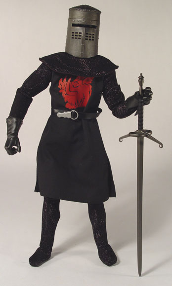
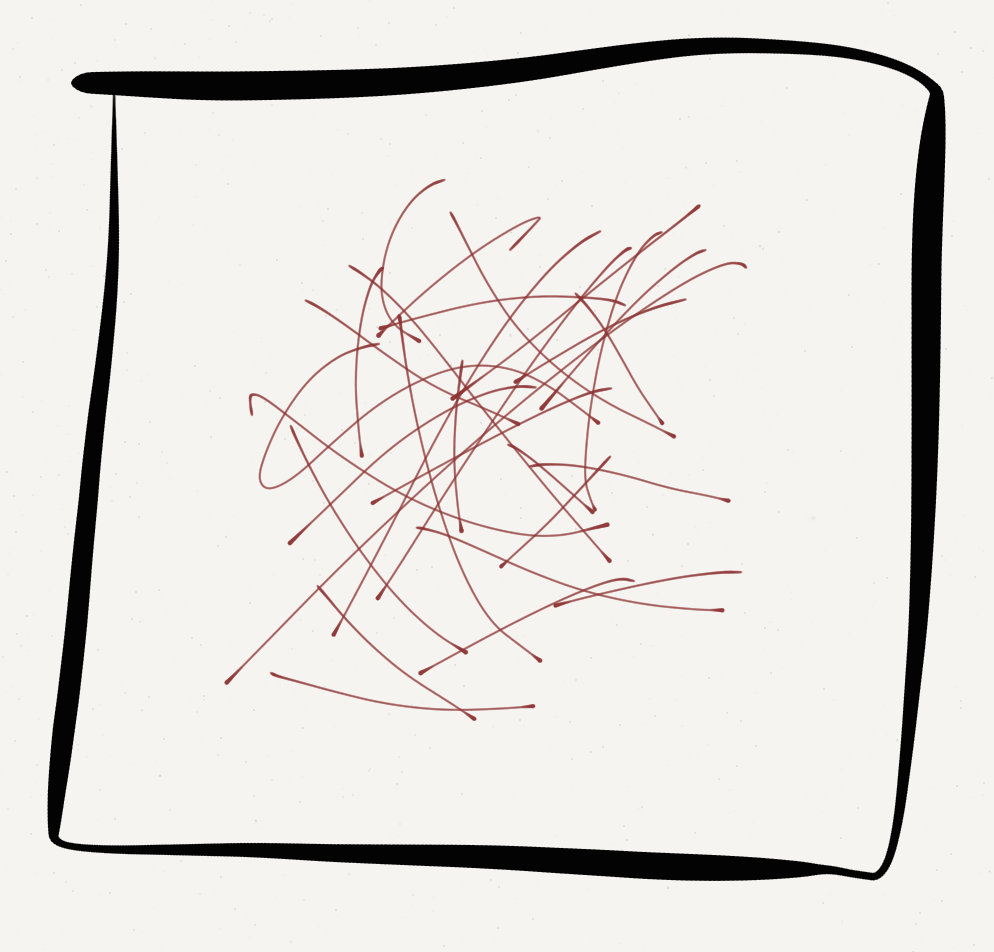

If your hard drive or computer failed tomorrow, what would you do?
Keep a copy of important non-private documents on Google Drive or iCloud
Buy an external drive and backup your whole machine
Time Machine on Mac, Windows Backup on PC
Or Backblaze, rsync, restic, etc
Seriously, your computer will likely die while you’re at UCSD, be prepared
How do languages generally make words? (Morphological Type)
Inflection vs. Derivation
Where to draw the line between morphology and phonology?
Go home, English, you’re drunk
A means of categorizing how languages put words together
One relevant dimension asks a common question: Do words have lots of morphemes or few?
If words have few morphemes (like English or Chinese), they’re “isolating”
If they have many (like Spanish or German), they’re “synthetic”
I did see the cat on the street, he’s cute.
I did see DEF cat on DEF street he-be.3sg cute.
Ti uhodila so mnoi
Ti u-hodi-la so mnoi
2sg.NOM away-go.IMPERF-past.FEM with 1sg.INST
“You left with me”
Esta escribiéndomelo
be.3sg write-GER-1sg.DAT-3sg.MASC
‘He/she is writing it to me.’
Donaudampfschifffahrtselektrizitätenhauptbetriebswerkbauunterbeamtengesellschaft
Donau-dampf-schiff-fahrts-elektrizitäten-haupt-betriebs-werk-bau-unter-beamten-gesellschaft
Danube-steam-ship-transport’s-electricities-head-operation’s-work-building-under-officials-association
Kiyakiicíwa:cé:hirʔasʔirhawi
‘There was the big buffalo lying there.’
English is isolating, but Mandarin is more isolating
Few languages are as polysynthetic as Wichita, but that’s OK!
If a language has few morphemes per word, it’s isolating
If the language has multiple morphemes per word, it’s synthetic
Attaching affixes that change the part of speech of the root, or change something important about the meaning
The meaning changes don’t apply to all words, and are sometimes unpredictable
control (verb) -> controllable (adjective)
amaze (verb) -> amazement (noun)
joy (noun) -> joyful (adjective)
teach (verb) -> teacher (noun)
roll (verb) -> unroll (verb)
write (verb) -> rewrite (verb)
fair (adjective) -> unfair (adjective)
Inflectional morphology predictably changes the meaning of the word in the sentence, but doesn’t change the part of speech or meaning of the whole word in a deep way.
Inflectional morphology is often added at the time of speaking
xot ‘house’
xot-yyn ‘two houses (dual)’
xot-yt ‘houses (plural)’
Devushk-a videt sobak-u
Devushk-u videt sobak-a
This is a case system. We’ll talk more about those later.
xoola-hayga ‘my herd’
xoola-haaga ‘your herd’
xoola-heeda ‘her herd’
xooli-hiisa ‘his herd’
Habl-o ‘I speak (Present tense)’
Habl-as ‘You speak (Present tense)’
Habl-a ‘He/She/It speaks (Present tense)’
Habl-amos ‘We speak (Present tense)’
Habl-ais ‘Y’all speak (Present tense)’
Habl-an ‘They speak (Present tense)’

Derivational morphology is used to build new words
Inflectional morphology changes their meanings in predictable ways in sentences
The line between these can get blurry in some cases
Most languages do a bit of each!
We discuss Language
We may discuss taboo subjects, words, constructions, or concepts
It’s all meant to further academic pursuits
Please come talk to me if you have any concerns.
Let’s look at this from an outsider’s perspective
Very few languages use /ɹ/
We’ve got a bunch of ways to make it

“I had Five Guys for lunch yesterday.”
“Let’s eat, Grandma!”
“I’m so sorry to hear about your exam score”
List intonation
English
All human beings are born free and equal in dignity and rights. They are endowed with reason and conscience and should act towards one another in a spirit of brotherhood.
French
Tous les êtres humains naissent libres et égaux en dignité et en droits. Ils sont doués de raison et de conscience et doivent agir les uns envers les autres dans un esprit de fraternité.
“We don’t just borrow words; on occasion, English has pursued other languages down alleyways to beat them unconscious and rifle their pockets for new vocabulary.” –James D. Nicoll
Most languages borrow terms from elsewhere
(but English is a thug)


“gh” from “rough”
“o” from “women”
“ti” from “action”
Pronounced like “Fish”

Then, we use these sounds to do silly things in the rest of the language
I’ve got a conference [at/in] the Price Center
I’ve got a conference at Indiana
I’ve got a conference at Indianapolis
I’ve got a conference at the Marriott in Indianapolis
I’ve got a meeting on Friday
I’ve got a meeting in August
I’ve got a meeting at 3pm
I’ve got a meeting during lunch
I’ve got a meeting ø next week
I saw her last night.
I saw her last morning.
I saw her last afternoon.
I saw her last evening.
I saw her last sunrise.
I saw her yesterday afternoon.
I saw her yesterday night.
Fish.
Fish.

Fishes.

Leaf -> Leaves
Wife -> Wives
Staff -> ??
Staffs (rhymes with “graphs”)
Staffs (rhymes with “calves”)
Staves (rhyme with “caves”)
Stife (because English.)

|
|
|---|

Mouse -> Mice
Louse -> Lice
House -> Hice
Spouse -> …
(This is a language pun, not advocacy for or against any particular relationship structure)
I have a car
*I have a sand.
I ate an asparagus
I ate a french fry
I saw a raccoon on the road
I saw some raccoons on the road
I saw some raccoon on the road

Speaking of dead animals…
I hugged three pigs, *I ate three porks
I bought some cows, I bought some beef
I bought some chickens, I ate some chicken
I ate some chickens
(Yet, Will has several beefs with Michael Bay)
| calm | happy |
sweet |
quiet | evil |
linguistic |
|
|---|---|---|---|---|---|---|
|
_ly |
calmly | happily | sweetly | quietly | evilly | linguistically |
|
un_ |
uncalm | unhappy | unsweet | unquiet | unevil | unlinguistic |
|
_ish |
calmish | happyish | sweetish | quietish |
evilish |
linguisticish |
|
to _ |
to calm | to happy | to sweet | to quiet | to evil | to linguistic |
| _ify | calmify | happify | sweetify |
quietify |
evilify | linguisticify |
“John works at Art of Espresso. He’s a coffee grinder.”
“Mark has retired three times now. He’s a serial retirer.”
“I just downloaded a new YouTube app. It’s a great YouTuber.”
“Mark builds armor, he’s an armorer. Steven builds hooks, he’s a …”
A affix which is inserted into the middle of the word
Will I tell you what it is?
Cons-fucking-titutional
Consti-fucking-tutional
Constitu-fucking-tional
Constitution-fucking-al
“Missi-fucking-sippi”
“He’s a deon-fucking-tologist”
“Antidisestablishmen-fucking-tarianism”
It’s time to talk about these issues
It ate my homework
It’s getting hot in here
It burns when I eat Habañeros
It sucks when Michael Bay remakes your childhood favorites
It’s about time we fix our writing system
Contributes nothing to the meaning of the sentence
“It” is a subject for sentences where there’s no subject at all
Which means the same thing as “Should we do something about that?”
Go home English, you’re drunk.
When a verb has a different meaning when coupled with a particular preposition or particle
Cut in - To offer somebody a part of a venture
Cut out - To stop something, or remove somebody from a venture, or lose audio
Cut with - To adulterate a drug
Cut off - To cease financial support, or merge leaving too little space
Cut it - To suffice for a task
Cut up - To slice into small pieces
Cut down - To shorten something
Cut across/through - To shorten one’s route by traversing an open space
Cut on - To repeatedly make small cutting strokes at the periphery of an object
Cut back - To reduce an existing option or investment, travel back in story
Sometimes, we don’t know if we want the verb particle construction, or the preposition!


“… then she threw my lunch up on the roof”
“… then she threw up my lunch on the roof”
Apparently, syntacticians have punted on this and call it a ‘particle’
In computational linguistics, we just call it ‘to’ and wash our hands of it
Either way, it’s going to cause problems
Buffalo buffalo Buffalo buffalo buffalo buffalo Buffalo buffalo.
This is a fully grammatical sentence
“New York bison whom other New York bison bully, themselves bully New York bison”.

Also fully grammatical English
It’s filled with irregularities, weirdnesses, odd constructions, and other silliness
… but that’s no different than any other language.
We’re simplifying languages left and right for this class
Partly because we don’t have the time
… and because if we didn’t, you’d run screaming


English is bat-poop cray-cray, in so many ways
… but so is every other language
That’s why we love them
Second language learners are fighting an uphill battle. Be kind!